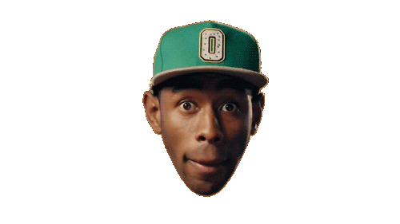

- Challenges:
Nashi.
- Problems:
Keiner.
- Results:
Kanénas.

I wanna be as free as the spirits of those who left. I'm talking Malcolm, Coltrane, my man Yusef. Through death grew conception, new breath and resurrection For moms, new steps in a direction. In the right way, told her, "Inside is where the fight lay And everything a brother do may not be what he might say". Chicago nights, they stay on the mind. But I write many lives, they lay on these lines. Wavin' signs of the times, many say the grind's on the mind. Shorties blunted-eyed and everyone wanna rhyme. Bush pushing lies, killers immortalized. We got arms but won't reach for the skies. Waiting for the Lord to rise, I look into my daughter's eyes. And realize I'ma learn through her. The Messiah might even return through her. If I'ma do it, I gotta change the world through her. Furs and a Benz, Gramps wantin 'em. Demons and old friends, Pops, they hauntin' him. The chosen one from the land of the frozen sun. Where drunk nights get remembered more than sober ones. Walk like warriors, we were never told to run. Explored the world to return to where my soul begun. Never looking back, or too far in front of me. The present is a gift, and I just wanna be.